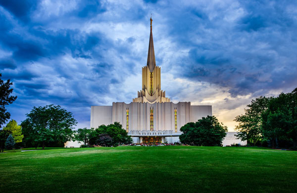
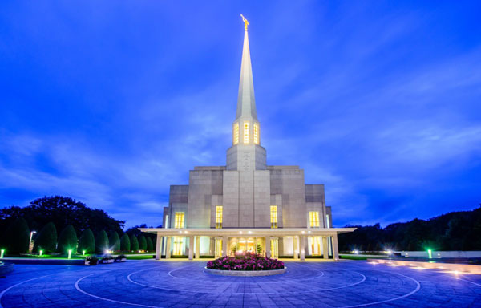
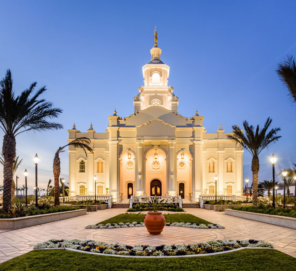
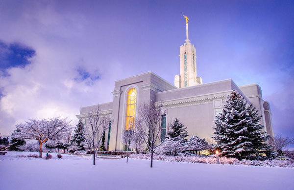

A Few of the Temples We Serve
Click on a Temple Image for Details!

The Jordan River Utah Temple was the 20th operating temple of The Church of Jesus Christ of Latter-day Saints worldwide. The Jordan River Utah Temple was the seventh temple built in Utah and the second built in the Salt Lake Valley, following the Salt Lake Temple (1893). The Jordan River Utah Temple and the Oquirrh Mountain Utah Temple (2009) were the first pair of temples to be built in the same city. The Jordan River Utah Temple was the only temple dedicated by President Marion G. Romney, who served as second counselor in the First Presidency. It is the highest capacity temple in the Church with six ordinance rooms each seating 122 patrons.
The construction of the Jordan River Utah Temple and its maintenance costs for many years were funded entirely by monetary donations from local members. The temple site was likewise gifted to the Church.
This temple features a rare statue of the Book of Mormon prophet Moroni. This temple is one of five Latter-day Saint temples with this style of the statue, and the only one in Utah, where Moroni is holding a replica of the golden plates, from which the Book of Mormon was translated.
The temple has unique exterior facade art glass as part of the natural lighting on the second and third floors. The window feature is also represented in the unoccupied tower and spire. These existing art glass features of the temple were constructed in the Dalle de Verre technique (a glass art technique that uses pieces of colored glass) with various shades and colors of glass.
Just hours before the re-dedication of the Jordan River Utah Temple, news correspondents announced that President Spencer W. Kimball, who was recovering from surgery and a lengthy hospital stay, would likely be confined to his room at the Hotel Utah during the dedication services. But with tears of joy, he was welcomed to the Celestial Room just before the ceremony commenced.

Located in Northern England, north of Liverpool and Manchester, the Preston England Temple anchors an extensive Church complex that includes a stake center, missionary training center, family history center, distribution center, patron housing facility, and temple missionary accommodations. Decorating the manicured grounds are mature trees, flower gardens, and a pair of reflection pools near the entrance.
The Preston England Temple was the sixth temple built in Europe and the second built in the United Kingdom, following the London England Temple (1958).
Missionary work in the British Isles began in 1837 when Elder Heber C. Kimball, an apostle, and six others arrived at Liverpool and traveled to Preston to pursue a contact with a family of Joseph Fielding. The first converts in Great Britain were baptized that year in Preston's River Ribble. On August 6, 1837, the Preston Ward was organized, which is the longest continuously functioning unit of the Church in the world.
Plans for the Preston England Temple were publicly announced by President Gordon B. Hinckley on October 19, 1992, during the second day of rededicatory services for the London England Temple.

On October 2, 2010, during the opening session of the 180th Semiannual General Conference, President Thomas S. Monson announced that Mexico's thirteenth temple would be constructed in the border town of Tijuana where the Church has experienced rapid growth in recent years.2 The Saints of Tijuana currently must cross the U.S.-Mexico border to partake in ordinance work at the San Diego California Temple. Six stakes are headquartered in the city of Tijuana with nearby stakes located in the states of Baja California and Sonora.
Long-time member Dominga G. Sifuentes, who was baptized in 1964, said, "I remember when the first chapel was built here. We had 30 members then. Now we have a temple. I've watched the Church grow and have seen many chapels constructed, but the temple brings a special air of peace and tranquility." Elder De Hoyos stated, "We've seen in other Mexican cities where a temple has been built that there is a newfound peace in the city itself. Not only in Mexico, but in other Latin American countries I've visited, a temple can be a real factor in bringing a sense of security and prosperity. And we feel certain much the same thing will happen here."
On the morning of Saturday, August 18, some 2,000 faithful Latter-day Saints gathered to a barren lot in eastern Tijuana to participate in the site dedication and groundbreaking ceremony for the Tijuana Mexico Temple. The design of the landmark building—which bears a notable resemblance to old Spanish missions—was chosen for a reason, according to Elder Benjamín De Hoyos of the Seventy, First Counselor in the Mexico Area presidency, who presided at the event. "Those early Spanish friars were very valiant in their preaching and building," he said. "And today, we in Mexico are very comfortable with the style of those churches. The temple will be an emblem for the entire Tijuana community."
The design of the Tijuana Mexico Temple reflects the Spanish Colonial influences that characterize much of Mexican architecture including the Spanish missions found throughout Mexico and the southwestern United States—specifically the San Xavier del Bac Mission in Tucson, Arizona. The brilliant white exterior symbolizes the holy purpose of the temple, which is crowned with a distinctive central tower, lifting the eyes heavenward. Towering palm trees and colorful landscaping will decorate the temple grounds.

Located in northeast American Fork, the Mount Timpanogos Utah Temple stands west of the majestic 11,750-foot Mount Timpanogos, providing the aptly named temple its stunning backdrop. A meetinghouse shares the temple site, which features beautiful grounds open to visitors, who are welcome to take in the colorful foliage, stroll its winding walkways, and feel the spirit of holiness surrounding this magnificent House of the Lord.
No location was specified when the Mount Timpanogos Utah Temple was announced in General Conference as a temple for "Utah County." The location was revealed six months later, at the following Conference, as a former Church welfare farm in American Fork. When the Mount Timpanogos Utah Temple was announced, President Gordon B. Hinckley explained that it would relieve demands placed on the Provo Utah Temple, which "is operating far beyond its designed capacity."
Ground was broken for the Mount Timpanogos Utah Temple a year after its announcement. Approximately 12,000 people gathered on the temple site for the ceremony. During the services, the location of the Madrid Spain Temple was announced. On July 17, 1995, a 13-foot-3-inch gold-leafed statue of the angel Moroni was set atop the Mount Timpanogos Utah Temple to an audience of an estimated 20,000, who literally clogged the surrounding streets. Once the statue was in place, the throngs of visitors broke into applause and then spontaneously began to sing The Spirit of God.
A total of 679,217 people toured the Mount Timpanogos Utah Temple during the six weeks of its public open house. The dedication of the Mount Timpanogos Utah Temple lasted an entire week with three sessions on Sunday and four on each of the following days for a total of 27 dedicatory sessions. The Mount Timpanogos Utah Temple was the ninth temple built in Utah and the second built in Utah County, following the Provo Utah Temple (1972).